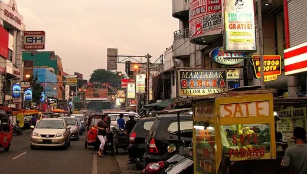
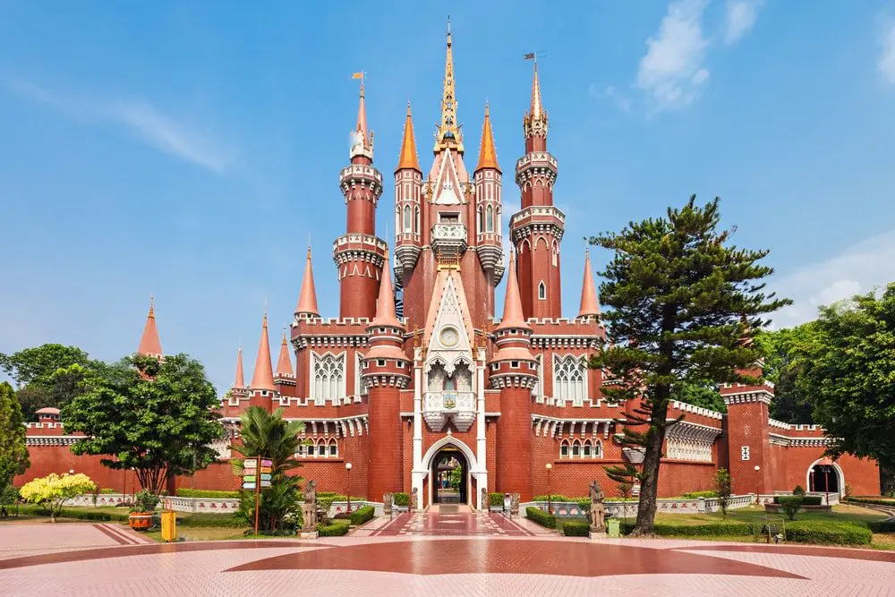
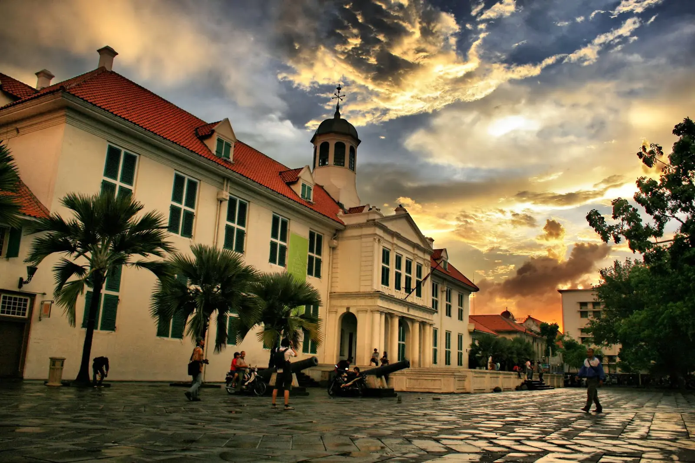
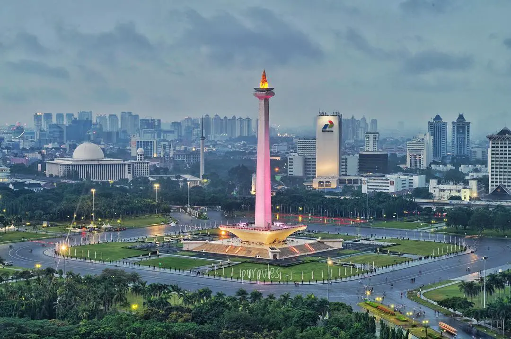

Jakarta adalah ibu kota dan kota terbesar Indonesia.
Terletak di estuari Sungai Ciliwung, di bagian barat laut Jawa, daerah ini telah lama menopang pemukiman manusia.
Bukti bersejarah dari Jakarta berasal dari abad ke-4 M, saat ia merupakan sebuah permukiman dan pelabuhan Hindu. Kota ini telah diklaim secara berurutan oleh kerajaan bercorak India Tarumanegara, Kerajaan Sunda Hindu, Kesultanan Banten Muslim, dan oleh pemerintahan Belanda, Jepang, dan Indonesia.
Hindia Belanda membangun daerah tersebut sebelum direbut oleh Kekaisaran Jepang semasa Perang Dunia II dan akhirnya menjadi merdeka sebagai bagian dari Indonesia.
Jakarta telah dikenal dengan beberapa nama. Ia disebut Sunda Kelapa selama periode Kerajaan Sunda dan Jayakarta, Djajakarta, atau Jacatra selama periode singkat Kesultanan Banten. Setelah itu, Jakarta berkembang dalam tiga tahap. "Kota Tua Jakarta", yang dekat dengan laut di utara, berkembang antara 1619 dan 1799 pada era VOC.
"Kota baru" di selatan berkembang antara 1809 dan 1942 setelah pemerintah Belanda mengambil alih penguasaan Batavia dari VOC yang gagal yang sewanya telah berakhir pada 1799. Yang ketiga adalah perkembangan Jakarta modern sejak proklamasi kemerdekaan pada 1945. Di bawah pemerintahan Belanda, ia dikenal sebagai Batavia (1619–1949),
dan Djakarta (dalam bahasa Belanda) atau Jakarta, selama pendudukan Jepang dan masa modern
Geografis

Jakarta memiliki luas sekitar 664,01 km² (lautan: 6.977,5 km²), dengan penduduk berjumlah 10.557.810 jiwa (2019).
Wilayah metropolitan Jakarta (Jabodetabek) yang berpenduduk sekitar 28 juta jiwa, merupakan metropolitan terbesar di Asia Tenggara atau urutan kedua di dunia.
Sebagai pusat bisnis, politik, dan kebudayaan, Jakarta merupakan tempat berdirinya kantor-kantor pusat BUMN, perusahaan swasta, dan perusahaan asing. Kota ini juga menjadi tempat kedudukan lembaga-lembaga pemerintahan dan kantor sekretariat ASEAN.
Jakarta dilayani oleh dua bandar udara, yakni Bandara Soekarno–Hatta dan Bandara Halim Perdanakusuma, serta tiga pelabuhan laut di Tanjung Priok, Sunda Kelapa, dan Ancol.
Wisata
Jakarta menawarkan beragam tujuan wisata untuk semua kalangan, mulai dari tempat wisata keluarga, alam, budaya, edukasi, hingga kuliner. Berbagai tempat wisata di Jakarta juga merupakan ikon daerah,
cocok untuk pelancong pemula yang ingin mendapat pengalaman terbaik, terutama jika waktu liburan hanya sedikit.
Taman Mini Indonesia Indah

Taman Mini Indonesia Indah
Taman Mini Indonesia Indah adalah taman hiburan ikonik bertemakan Indonesia yang populer sejak tahun 90-an. Pengunjung bisa menikmati berbagai wahana dan fasilitas seperti misalnya Anjungan Daerah, kereta gantung, Teater 4D, museum, Teater IMAX Keong Mas, dan masih banyak lagi.
Semua fasilitas, bangunan, wahana, dan dekorasi di tempat wisata di Jakarta ini merupakan miniatur dari 33 provinsi di Indonesia.
Taman Mini Indonesia Indah cocok untuk semua umur, terutama pelancong yang membawa anak.
Lokasinya juga terbilang strategis dan mudah dicapai dengan kendaraan umum seperti KRL dan Bus Trans Jakarta. Taman Mini Indonesia Indah buka dari pukul 07:00 hingga pukul 21:00.
Museum Fatahillah

Museum Fatahillah
Museum Fatahillah adalah nama populer untuk Museum Sejarah Jakarta. Berdiri sejak tahun 1712, tempat wisata di Jakarta ini menyimpan benda-benda peninggalan era Kerajaan Pajajaran dan Tarumanegara, koleksi becak dari berbagai era, produk kebudayaan Betawai,
dan peninggalan sejarah era kolonial. Ada juga koleksi perabot kuno dengan berbagai gaya, mulai dari Jawa, Tiongkok, hingga Belanda.
Museum Fatahillah juga memiliki program edukasi sejarah dan budaya, seperti misalnya Program Kesenian Nusantara, seminar museum sejarah, hingga kegiatan rekonstruksi sejarah.
Museum ini juga populer sebagai lokasi foto prewedding karena pemandangan latar belakang foto yang ditawarkan sangatlah khas. Tempat wisata di Jakarta ini buka setiap hari kecuali Senin, dari pukul 09:00 hingga 17:00.
Monumen Nasional

Monumen Nasional
Tugu Monumen Nasional (Monas) adalah tujuan “wajib” warga luar Jakarta untuk berfoto. Monas dikelilingi oleh taman yang asri di bagian luarnya, dan pada bagian dalamnya menunjukkan diorama perjuangan bangsa Indonesia dalam meraih kemerdekaan.
Ada juga lift yang akan membawa pengunjung untuk naik ke puncak tugu dan memandang panorama Jakarta dari ketinggian.
Sejak tahun 2016, pemerintah provinsi DKI Jakarta membuka Monumen Nasional pada malam hari, sehingga pengunjung bisa menikmati wisata malam.
Pengunjung bisa masuk ke kawasan tempat wisata di Jakarta ini dengan menggunakan kereta wisata dari Pintu Lenggang Jakarta, terutama pada malam hari. Pengunjung yang lapar bisa makan di kedai-kedai makanan di sekitar Monas.